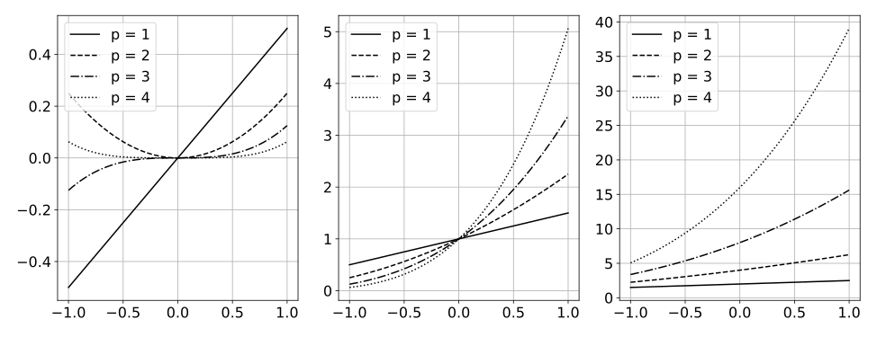

The polynomial kernels are widely used in machine learning and they are one of the default choices to develop kernel-based classification and regression models.
However, they are rarely used and considered in numerical analysis due to their lack of strict positive definiteness. In particular they do not enjoy the
usual property of unisolvency for arbitrary point sets, which is one of the key properties used to build kernel-based interpolation methods.
This paper is devoted to establish some initial results for the study of these kernels, and their related interpolation algorithms, in the context of
approximation theory.
We will first prove necessary and sufficient conditions on point sets which guarantee the existence and uniqueness of an interpolant. We will
then study the Reproducing Kernel Hilbert Spaces (or native spaces) of these kernels and their norms, and provide inclusion relations between spaces
corresponding to different kernel parameters. With these spaces at hand, it will be further possible to derive generic error estimates which apply to
sufficiently smooth functions, thus escaping the native space. Finally, we will show how to employ an efficient stable algorithm to these kernels to obtain
accurate interpolants, and we will test them in some numerical experiment.
After this analysis several computational and theoretical aspects remain open, and we will outline possible further research directions in a concluding section.

Values of the kernel \(k_{a,p}(\cdot, 1/2)\) on \([-1,1]\) for \(p\in\{1,2,3,4\}\) and for \(a=0\) (left), \(a=1\) (center), and \(a=2\) (right). Properties:
Values of the kernel \(k_{a,p}(\cdot, 1/2)\) on \([-1,1]\) for \(p\in\{1,2,3,4\}\) and for \(a=0\) (left), \(a=1\) (center), and \(a=2\) (right). Properties:
Values of the kernel \(k_{a,p}(\cdot, 1/2)\) on \([-1,1]\) for \(p\in\{1,2,3,4\}\) and for \(a=0\) (left), \(a=1\) (center), and \(a=2\) (right). Properties:
Values of the kernel \(k_{a,p}(\cdot, 1/2)\) on \([-1,1]\) for \(p\in\{1,2,3,4\}\) and for \(a=0\) (left), \(a=1\) (center), and \(a=2\) (right). Properties:
Values of the kernel \(k_{a,p}(\cdot, 1/2)\) on \([-1,1]\) for \(p\in\{1,2,3,4\}\) and for \(a=0\) (left), \(a=1\) (center), and \(a=2\) (right). Properties:
Positive definite (p.d.), not strictly p. d.
Series expansion \(k_{a,p}(x, y) = ...\)
Mathematics
This poster template loads MathJax by default, so you can include inline math in backslash-parentheses \( … \) and display math in backslash-brackets \[ … \]:
\((\lambda x. e) v \downarrow e[x/v]\) (β-reduction)
Using MathJax allows users of assistive technology to browse the equations.
Stable computations
Convergence of the maximal absolute error of interpolation of the function \(f(x) = \cos(10 x)\) using \(N=5, \dots, 50\) Chebyshev points. For each
figure, we test a polynomial interpolant (gray line), and kernel interpolants with various values of \(p\), and \(a=5\) (left column) and \(a=10\) (right column).
The kernel interpolants are computed with the direct method (first row) and with RBF-QR (second row).
Lagrange basis
Convergence of the maximal absolute error of interpolation of the function \(f(x) = \cos(10 x)\) using \(N=5, \dots, 50\) Chebyshev points. For each
figure, we test a polynomial interpolant (gray line), and kernel interpolants with various values of \(p\), and \(a=5\) (left column) and \(a=10\) (right column).
The kernel interpolants are computed with the direct method (first row) and with RBF-QR (second row).